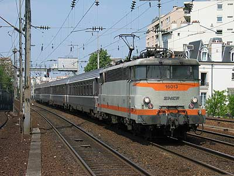
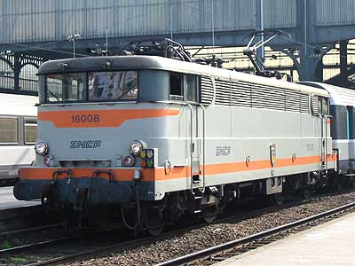
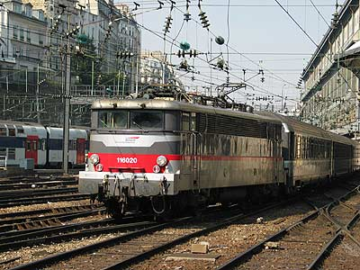
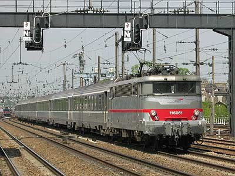
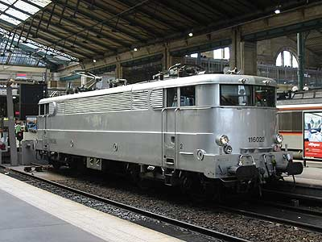
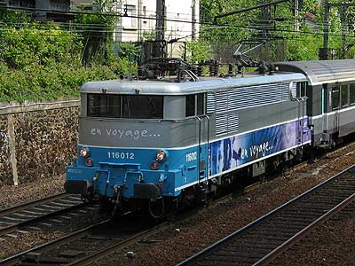

BB 16000
Comtemporaines des BB 9200, les BB 16000 furent construites de 1958 à 1963 à 62 exemplaires.
Elles reprirent la mécanique de leurs cousines à courant continu. Leur équipement électrique fut dérivé
de celui des BB 12000, construit autour d'un graduateur linéaire
15 kV. Elles furent les premières machines monophasées aptes au 160 km/h. Les 16000 ont tiré la Flèche d'Or, le Faidherbe,
le Kléber, le Goethe, L'Orient Express... Elles ont également inauguré l'électrification de lignes du Nord et de l'Est,
notamment Paris-Lille et Paris-Strasbourg. Les BB 16000 figuraient sur le sigle de la SNCF dans les années 1960.
L'esthétique de ces machines fut modifié suite à l'élargissement des persiennes pour supprimmer un effet de dépression
à grande vitesse, puis lors des révisions générales, par le déjupage et le renforcement des traverses de tête
en vue d'appliquer l'attelage automatique UIC, qui ne sera finalement pas adopté. Les machines reçurent aussi des feux de fin de convoi.
En 1979, 12 locomotives furent équipées de la réversibilité par câblots pour la desserte de Paris-Le Havre et Paris-Lille.
Chassées de l'Est par les 15000 et en partie du Nord par le TGV, elles se sont réfugiées
sur le réseau de Paris St Lazare, où elles desservent la ligne Paris - Le Havre en réversibilité et Paris-Caen-Cherbourg,
et les transversales du Nord de la France. Contrairement aux BB 9200 qui ont perdu la majorité de leur prestations voyageurs,
les BB 16000 tirent très peu de Fret. 24 machines étaient par ailleurs dotées d'un couple 180. En 2004, la série ne comptait plus que 43 unités
puisque 4 machines (16025, 16034, 16038 et 16045) avaient été radiées suite à accidents et 15 machines ont été
transformées en BB 16100.
Un grand tournant arrive en 2007 lors de l'ouverture du TGV Est. Les nombreuses 15000 libérées sont venues reprendre tous les trains du réseau St Lazare, y compris les trains réversibles Corail et les V2N. Poussant ainsi les 16100 et le plus gros du contingent des 16000 à la retraite. Si bien qu'en 2011, il ne subsiste que 16 machines à l'inventaire. Elles assurent des trains entre Paris Gare du Nord et le nord de la France. Elles sont toutes affectées à
Achères.
Le 24 Novembre 2012, un train d'adieu était organisé avec la BB 16029 tirant le train n°12313 Paris-Maubeuge. Il est probable que les BB 16000 arrêtent tout service commercial à la fin 2012.
Quelques données techniques
Constructeur : Jeumont MTE
Tension d'alimentation : monophasé 25 kV 50 Hz
Chaîne de traction : Graduateur linéaire 15 kV, redresseurs ignitrons (remplacés par des semi-conducteurs au silicium)
Motorisation : 1 moteur 920 V par essieu
Puissance totale : 4130 kW
Longueur : 16,680 m
Masse : 88t
Pantographes : 2 x AM 11
Dispositions particulières: Réversibilité par câblots pour les locs 16003, 6, 7, 8, 18, 32, 44, 47, 39, 53, 50, 56.
Machines remarquables de la série
La 16028, accidentée peu après sa sortie d'usine, fut transformée en BB 20005 lors des essais de machines bicourantes.
Donnant meilleure satisfaction que les autres prototypes, elle eu pour descendance directe les BB 25100, 25200 puis 25150. Elle fut remise au type 15 ans plus tard.
La 16012, depuis les essais des redresseurs au silicium, possède des persiennes supplémentaires. Les persiennes initiales étant jugées suffisantes, la modification ne sera pas portée sur les autres machines.
La 16029 fut la première machine portant la livrée "En Voyage". Elle resta de longs mois peinte en gris métallisé
dans l'attente de son pelliculage. La 16012 fut durant quelques semaines peinte en gris avec les nez peints en bleu et mauve. Les livrées
ont été terminées depuis.
Pour plus d'info :
La fiche BB 16000 sur Wikipedia
Fiche technique des BB 16000 de Florent Brisou
L'inventaire des BB 16000 sur Trains du Sud-Ouest

La BB 16013 à Asnières en provenance de Trouville (23/04/2003)

La BB 16008 revers à Paris St Lazare (05/03/2002)

La BB 16020 Multiservice Gris foncé 808 à l'arrivée à Paris St Lazare (21/03/2003)

La BB 16061 en multiservice Gris orage 844 à Clichy Levallois (22/04/2003)

La BB 16029, livrée inachevée, à Paris Nord (07/10/2002)

La BB 16012 et ses persiennes particulières à La Garenne Colombes (29/04/2003)